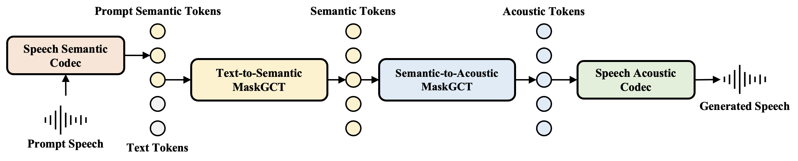

MaskGCT:
Zero-Shot Text-to-Speech with Masked Generative Codec Transformer
Abstract Nowadays, large-scale text-to-speech (TTS) systems are primarily divided into two types: autoregressive and non-autoregressive. The autoregressive systems have certain deficiencies in robustness and cannot control speech duration. In contrast, non-autoregressive systems require explicit prediction of phone-level duration, which may compromise their naturalness. We introduce the Masked Generative Codec Transformer (MaskGCT), a fully non-autoregressive model for TTS that does not require precise alignment information between text and speech. MaskGCT is a two-stage model: in the first stage, the model uses text to predict semantic tokens extracted from a speech self-supervised learning (SSL) model, and in the second stage, the model predicts acoustic tokens conditioned on these semantic tokens. MaskGCT follows the mask-and-predict learning paradigm. During training, MaskGCT learns to predict masked semantic or acoustic tokens based on given conditions and prompts. During inference, the model generates tokens of a specified length in a parallel manner. We scale MaskGCT to a large-scale multilingual dataset with 100K hours of in-the-wild speech. Our experiments demonstrate that MaskGCT achieves superior or competitive performance compared to state-of-the-art zero-shot TTS systems regarding quality, similarity, and intelligibility while offering higher generation efficiency than diffusion-based or autoregressive TTS models.
Contents
- System Overview
- Zero-shot In-context Learning
- Celebrities and Anime Characters
- Emotion Samples
- Speech Tempo Controllability
- Robustness
- Speech Editing
- Voice Conversion
- Cross-language Video Translation
This page is for research demonstration purposes only.
System Overview

Figure 1. An overview of our MaskGCT system. MaskGCT consists of four main parts: (1) a speech semantic representation codec converts speech to semantic tokens; (2) a text-to-semantic model predicts semantic tokens with text and prompt semantic tokens; (3) a semantic-to-acoustic model predicts acoustic tokens conditioned on semantic tokens; (4) a speech acoustic codec reconstructs speech waveform from acoustic tokens.
Zero-shot In-context Learning
The first four prompt audios are from the demo page of Seed-TTS.
| Prompt | Same Language Generation | Cross-linugal Generation |
|---|---|---|
I don't really care what you call me. I've been a silent spectator, watching species evolve, empires rise and fall. But always remember, I am mighty and enduring. Respect me and I'll nurture you; ignore me and you shall face the consequences. |
顿时，气氛变得沉郁起来。乍看之下，一切的困扰仿佛都围绕在我身边。我皱着眉头，感受着那份压力，但我知道我不能放弃，不能认输。于是，我深吸一口气，心底的声音告诉我：“无论如何，都要冷静下来，重新开始。” |
|
Dealing with family secrets is never easy. Yet, sometimes, omission is a form of protection, intending to safeguard some from the harsh truths. One day, I hope you understand the reasons behind my actions. Until then, Anna, please, bear with me. |
处理家庭秘密从来都不是一件容易的事。然而，有时候，隐瞒是一种保护形式，旨在保护一些人免受残酷的真相伤害。有一天，我希望你能理解我行为背后的原因。在那之前，安娜，请容忍我。 |
|
突然，身边一阵笑声。我看着他们，意气风发地挺直了胸膛，甩了甩那稍显肉感的双臂，轻笑道："我身上的肉，是为了掩饰我爆棚的魅力，否则，岂不吓坏了你们呢？" |
Suddenly, there was a burst of laughter beside me. I looked at them, stood up straight with high spirit, shook the slightly fleshy arms, and smiled lightly, saying, "The flesh on my body is to hide my bursting charm. Otherwise, wouldn't it scare you?" |
|
他闭上眼睛，期望这一切都能过去。然而，当他再次睁开眼睛，眼前的景象让他不禁倒吸一口气。雾气中出现的禁闭岛，陌生又熟悉，充满未知的危险。他握紧拳头，心知他的生活即将发生翻天覆地的改变。 |
He closed his eyes, expecting that all of this could pass. However, when he opened his eyes again, the sight in front of him made him couldn't help but take a deep breath. The closed island that appeared in the fog, strange and familiar, was full of unknown dangers. He tightened his fist, knowing that his life was about to undergo earth-shaking changes. |
|
Hallucination in large language models usually refers to the model generating unfaithful, fabricated, inconsistent, or nonsensical content. As a term, hallucination has been somewhat generalized to cases when the model makes mistakes. Here, I would like to narrow down the problem of hallucination to cases where the model output is fabricated and not grounded by either the provided context or world knowledge. |
大型语言模型中的幻觉通常是指模型生成不真实、虚构、不一致或无意义的内容。幻觉这个术语在某种程度上已被泛化为模型出错的情况。在这里，我想将幻觉问题缩小到模型输出是虚构的、不以提供的上下文或世界知识为基础的情况。 |
|
我跟你们说，你们太坏了，每次我瘦了你们就说，坤你太瘦了你要多吃点，然后胖了的时候你们又说，坤你太胖了你要减肥了。 |
Once upon a time on a farm, a chicken named Kun dreamed of slam dunks. One day, he found a bouncy basketball and leaped into action, surprising all with his unexpected court skills and a dunk that defied gravity. The farm went wild, and Kun became the legend of the barnyard court. |
|
That's true. But times have changed, and comic books these days often blur the line between right and wrong, making things unclear. Superheroes don't always do the thing and struggle with everyday problems like you and me. |
首先，观众的审美和期待在不断演变，他们可能寻求更多元化和深层次的内容。其次，超级英雄题材的过度饱和可能使一些观众感到疲劳，因为市场上充斥着大量相似的超级英雄电影和电视剧。 |
|
Celebrities and Anime Characters
MaskGCT can mimic the voices of celebrities or characters from animated shows. We present these examples for purely research purposes.
| Celeb | Prompt | Generated |
|---|---|---|
| Donald Trump | In short, we embarked on a mission to make America great again, for all Americans. |
But to those who knew her well, it was a symbol of her unwavering determination and spirit. |
| Benedict Cumberbatch | So maybe, that you would prefer to forgo my secret. |
However, if you choose to stay, know that the truth I unveil may forever alter the course of your journey. |
| 周杰伦 (Jay Chou) | 对我来讲是一种荣幸但是也是压力蛮大的，不过我觉得是一种，呃，很好的一个挑战。 |
我觉得这种运动其实不是说靠机会的，我觉得对每个人来讲，像我们歌手来讲，我觉得其实都是你要自己去努力，然后才可以达到自己的梦想。 |
| 丁真 (Zhen Ding) | 今天我很荣幸作为一个青藏高原的孩子，能来到联合国。 |
我希望大家能来到我的家乡的大自然中学习，让我的野生动物朋友们来教会你们。 |
| Anime | Prompt | Generated |
|---|---|---|
| Rick (from Rick and Morty) | Yeah, that's the difference between you and me morty. I never go back to the carpet store. |
Then I would never talk to that person about boa constrictors, or primeval forests, or stars. I would bring myself down to his level. |
| Morty (from Rick and Morty) | I'm being serious. Ok? |
In what a disgraceful light might it not strike so vain a man! |
| 后羿 (Houyi) | 周日被我射熄火了，所以今天是周一。 |
有一种撕心裂肺的感觉，是辣椒，我加了辣椒！ |
| 八重神子 (Yae Miko) | 今夜的月光如此清亮，不做些什么真是浪费。随我一同去月下漫步吧，不许拒绝。 |
梯度是一个多变量微积分中的概念，用于描述一个标量场在某一点处的最大变化率，以及变化最快的方向。在物理学中，梯度通常用来表示某个物理量的空间变化情况，例如温度或压力。 |
Emotion Samples
MaskGCT can learn the prosody, style, and emotion of prompt speech.
| Emotion | Text | Generated |
|---|---|---|
| Angry | Gosh, was I fucking wrong! Let me just tell you after living in LA, I was not comfortable there. Well, you know what? I'll get into it in a minute. But, I think the reason why I said that was. | |
| 你以为这只是小事一桩？你错了！每一次你的冷漠和无视，都像是在我心上划下一道道深深的伤口！ | ||
| Disguested | Later recounting that quote, it melted in my mouth like raw tuna in a sushi restaurant. I fucking hate this guy. Just so despicable, so, so disgusting. | |
| Fearful | But Astrid wouldn't abandon her quest. As they traversed the dense forest, Astrid could start to discern eerie whispers emanating from the shadows. She hastened her pace, her pulse racing with apprehension, she darted across the underbrush and stumbled over the roots. | |
| 这种压力不仅仅来自外部，更深层次的是自我期望的压迫。我渴望在职业道路上不断前进，但每一步都显得如此艰难。内心的焦虑和不安，让我在夜深人静时难以入眠，脑海中不断回放着白天的种种挑战和失误。 | ||
| Happy | Would you guys personally like to have a fake fireplace, an electric one, in your house? Or would you rather have a real fireplace? Let me know down below. Okay everybody, that's all for today's video and I hope you guys learned a bunch of furniture vocabulary! | |
| Sad | I used to think that when you are sad, you will cry a lot. but it turns out that when you are really sad, you can't even shed a single tear. This world is so imperfect that if you want something, you have to give up something. | |
| 这次考试真的太难了，我，我每一道题都不知道怎么写。 | ||
| Surprised | Guess what I saw in the park next to school last night? A very long python! I kind of want to check it out again tonight. | |
| 天呐，你看了昨晚的比赛吗，真的是太精彩太刺激了，我激动的一晚上没睡着。 |
MaskGCT enables emotion control for zero-shot in-context learning through post-training.
| Prompt | neutral | Angry | Happy | Sad | Surprise |
|---|---|---|---|---|---|
Speech Tempo Controllability
MaskGCT has the capability to control the total duration of the generated audio, thereby allowing us to regulate the tempo of the generated speech within a reasonable range.
| Prompt | 0.6x Duration | 0.8x Duration | Origin Duration | 1.2x Duration |
|---|---|---|---|---|
Robustness
Compared to AR models, MaskGCT exhibits greater robustness (lower WER), demonstrating enhanced stability in some challenging cases (such as tongue twisters and other samples where AR models are prone to hallucinations).
| Text | MaskGCT | AR |
|---|---|---|
| The great Greek grape growers grow great Greek grapes one one one. | ||
| I thought a thought. But the thought I thought wasn't the thought I thought I thought. If the thought I thought I thought had been the thought I thought, I wouldn't have thought so much. | ||
| Whether the weather be fine or whether the weather be not, whether the weather be cold or whether the weather be hot. Well weather the weather whether we like it or not. | ||
| 针蓝线蓝领子蓝，蓝针蓝线蓝领蓝。蓝针蓝线连蓝领，针蓝线蓝领子蓝。 | ||
| 墙上画凤凰，凤凰画在粉红墙。红凤凰、粉凤凰，红粉凤凰、花凤凰。红凤凰，黄凤凰，红粉凤凰，粉红凤凰，花粉花凤凰。 | ||
| 随后，民警还在店里发现一把锤子锤子锤子锤子锤子锤子。 | ||
| 北京在出行规模规模规模规模规模，城市影响力方面方面方面方面方面表现优异优异优异优异优异。 | ||
Speech Editing
Based on the mask-and-predict mechanism, our text-to-semantic model supports zero-shot speech content editing with the assistance of a text-speech aligner. By using the aligner, we can identify the editing boundary of the original semantic token sequence, mask the portion that needs to be edited, and then predict the masked semantic tokens using the edited text and the unmasked semantic tokens.
| Source Text | Source Speech | Target Text | Edited Speech |
|---|---|---|---|
| If the red of the second bow falls upon the green of the first, the outcome is an abnormally wide yellow band in the bow, since red and green light when mixed form yellow. | If the red of the second bow falls upon the green of the first, the result is to give a bow with an abnormally wide yellow band, since red and green light when mixed form yellow. | ||
| The difference in the rainbow depends considerably upon the size of the drops, and the colored band becomes wider as the size of the drops grows. | The difference in the rainbow depends considerably upon the size of the drops, and the width of the colored band increases as the size of the drops increases. |
Voice Converison
MaskGCT supports zero-shot voice conversion by fine-tuning the S2A (semantic-to-acoustic) model with a modified training strategy. We are still working on improving the effectiveness of voice conversion. The source and prompt samples are from the demo page of Seed-TTS.
| Source | Prompt | Generated |
|---|---|---|
Cross-language Video Translation
Some translation samples just for fun.